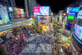
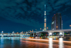
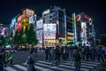
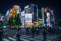
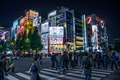

Multimédia
Nesta página encontra conteúdos multimédia
Fotografias · Vídeo · Poesia
Fotografias



 



Vídeo
Poesia
Tóquio desperta em néon e luar,
ruas que dançam, pessoas a andar.
No monte distante, o Fuji vigia,
cidade que nunca adormece ao dia.
Cerejeiras florescem, pintando o chão,
num sopro suave, em plena estação.